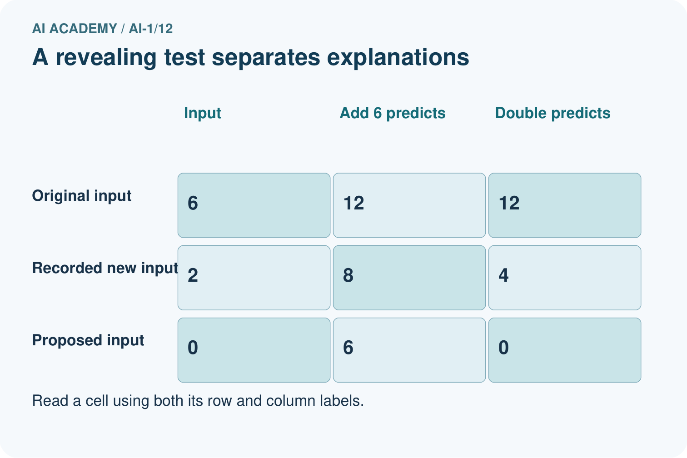
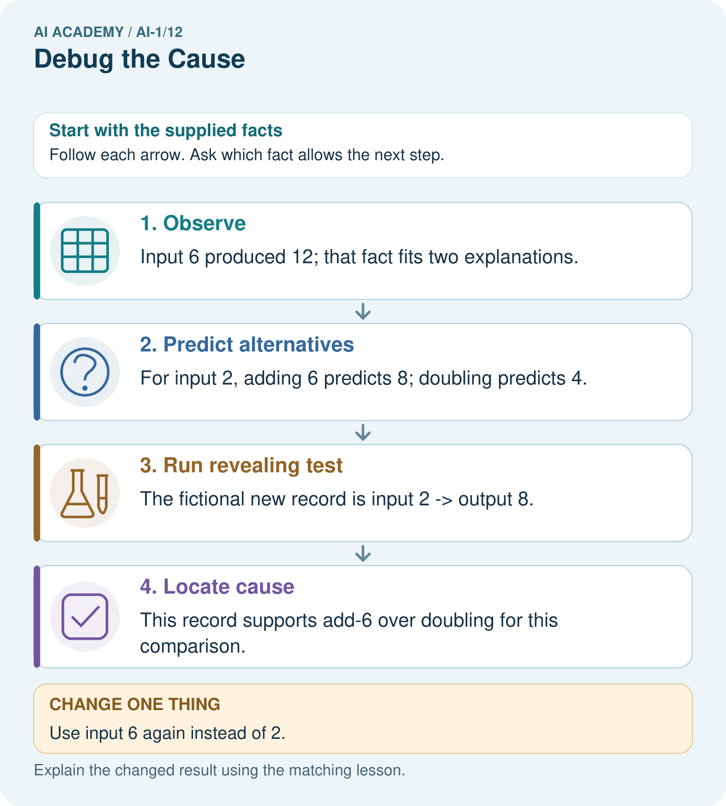
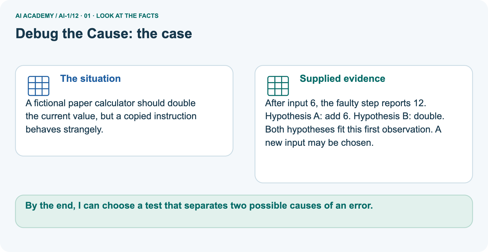
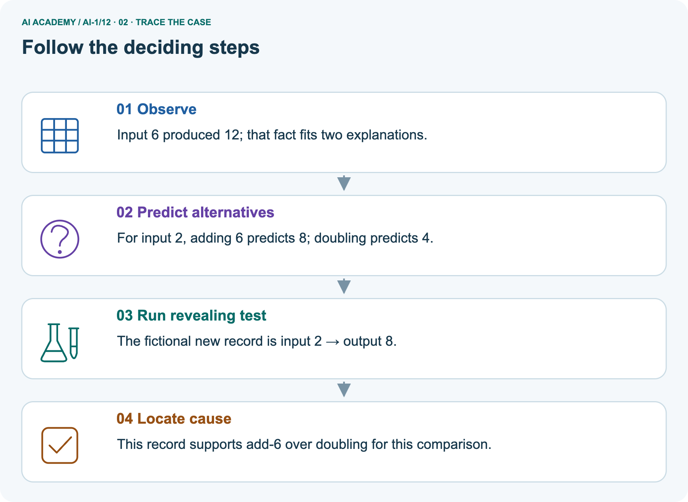
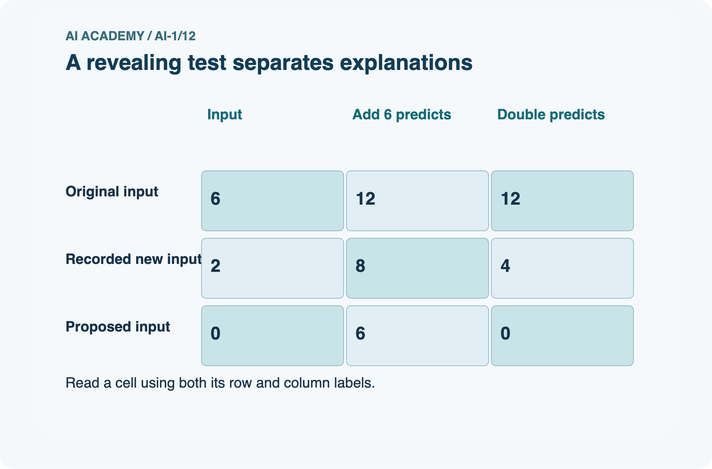
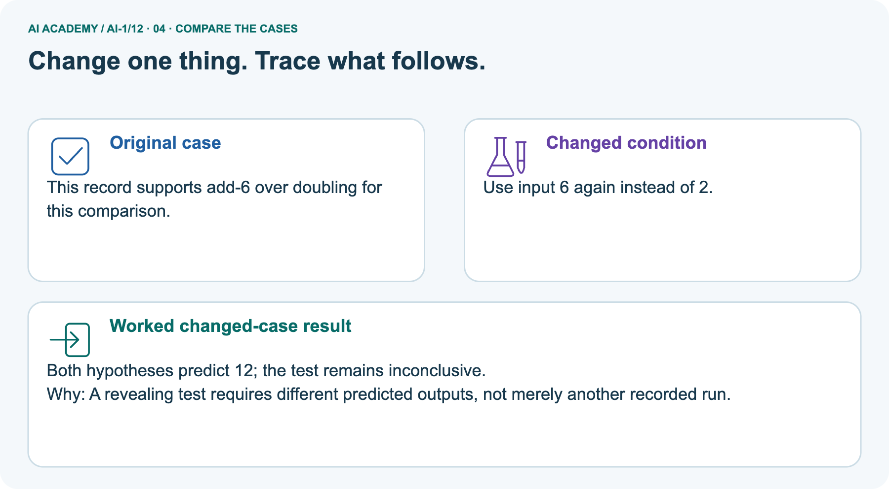
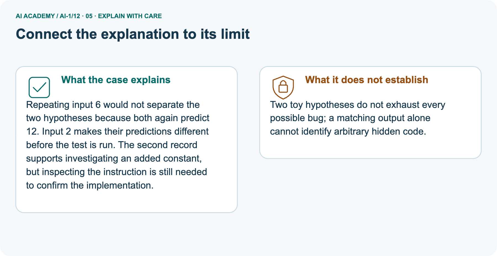
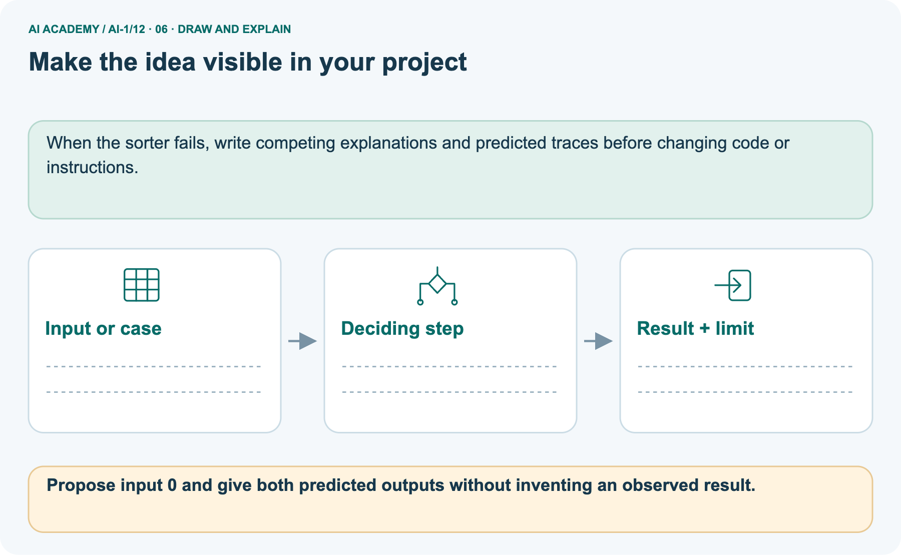

AI Academy · Level 1 · Grade 6 · Week 12 · Workbook
Debug the Cause
Learn to understand, design, build, test and explain AI systems responsibly.
Project: Helpful Classroom Sorter
THE CONNECTED WEEK
One connected debugging record.
Locate a mismatch, distinguish hypotheses, reject a patch, try the ticket case, then record repair evidence.
Keep one habit: Keep expected and observed values in separate columns.
Main lesson · Section 1
Recall: reconnect earlier ideas
Retrieve before opening notes.
Retrieve and explain
Try the recall before opening notes. Then use a different colour or a labelled second line to correct your explanation.
Without opening the old lesson, explain one key idea from Repeating Efficiently. Give an example and a mistake that the idea helps you avoid.
Without opening the old lesson, explain one key idea from Algorithms as Recipes. Give an example and a mistake that the idea helps you avoid.
Without opening the old lesson, explain one key idea from Sound Becomes a Signal. Give an example and a mistake that the idea helps you avoid.
Earlier wording, alternatives and picture transcripts
Repeating Efficiently
Algorithms as Recipes
Sound Becomes a Signal
Main lesson · Section 12
W1 · Locate the first divergence
Calculate the intended trace before judging the later symptom.
Your evidence record
A procedure must add 2, double the updated value, then subtract 1. Starting at 3, an observed trace is 3, 5, 8, 7.
Write the expected trace, identify the first difference and explain why the final subtraction is not necessarily a separate fault.
Main lesson · Section 13
W2 · Choose a revealing new input
Predict each suspected fault before running a comparison.
Your evidence record
In W1 the faulty middle step may add 3, or add the original starting value. Both explain 5 becoming 8 when the start is 3. Choose start 1 or start 3 for a revealing new test.
Predict the final result under each explanation and under the intended procedure.
Main lesson · Section 14
W3 · Reject a constant-output patch
Give a new input with a different specified result.
Your evidence record
A learner repairs the original points machine by reporting 12 for every input, because 12 is correct from start 4. Give a different starting input and its expected output under add 3, double, subtract 2.
Explain why the constant report is not a valid repair and what earlier evidence should be preserved.
Main lesson · Section 4
W4 · Debug a new ticket rule
Keep one first attempt before hints or feedback.
Read and explain independently
A paper ticket rule must add 1 to the input count. If the updated count is at least 5, report Group; otherwise report Single. A copied version says above 5.
Choose the smallest three consecutive nonnegative starting counts that test just below, exactly at and just above the comparison boundary. Predict both versions, identify the revealing start and state the repair and retests.
Keep a fair record
Attempt this case before feedback. Record any help. Earlier examples below are further practice; a case already practised with feedback cannot establish fresh transfer.
Earlier wording, alternatives and picture transcripts
Independent case: Debug a new ticket rule
Main lesson · Section 16
W5 · Report after the first W4 attempt and feedback
Record the exact repair, retests and limits after trying the reserved ticket case.
Your evidence record
After repairing W4, all three chosen tests pass. Write a short report with the fault, the exact repair, the three inputs and expected outputs, and what those passing tests establish.
Explain why saying every possible error is now impossible would go beyond the evidence.
Main lesson · Section 9
Project · Keep the decision and its evidence
Add this week’s change to your existing project record.
Your evidence record
When the sorter fails, log the first wrong stage and change only the responsible rule, input, or label.
The project change and evidence I will keep
Main lesson · Section 17
Feedback · Repair and return
Keep the first attempt, the repair and a changed-case return.
Your evidence record
| Evidence | My record |
|---|---|
| Worked alone / hint / model | |
| First step I repaired and why | |
| New case checked later; date and result | |
| What I can now explain without notes | |
| One remaining question |
Revisit this idea with your teacher after a delay. Familiarity is different from explaining and using it on a changed case.
Main lesson · Section 10
Finish · Judge the evidence in your work
Point to work that supports your confidence level.
Your evidence record
- I can explain the mechanism.
- I can show evidence.
- I can handle a changed case.
- I can name a limit.
Mark each as not yet, with help or independently, and attach supporting work.
Teacher review ____________________ Next step ____________________
Reference bank and extra practice
Choose the reference that helps your next step.
Reference · Supported W2 record
Reference · Section 2
Reference · Supported W2 record
This is the same W2 attempt. Keep one response record.
Use this when helpful
Use W2: Choose between two explanations for Debugging with revealing tests. Record the answer once; the lesson and workbook refer to the same attempt.
| Given inputs | Procedure I chose | Middle steps | Result and check |
|---|---|---|---|
Extra practice · Repair the explanation
Reference · Section 3
Extra practice · Repair the explanation
Explain the deciding fact before discussing the answer.
Use this when helpful
Use the worked case for Debugging with revealing tests. Proposed explanation: “The last wrong number locates the fault”. Decide whether this explanation is supported.
Point to the step or supplied fact that decides; explain your repair if needed.
Reference · Original learning target
Reference · Section 5
Reference · Original learning target
Use this target to inspect an explanation.
Use this when helpful
Starting at square 0, the target is square 3. Program: repeat twice {MOVE 1}; STOP. A teammate changes the target to 2 and calls the bug fixed. Repair the program and give two tests.
Extra practice · A complete case
Reference · Section 6
Extra practice · A complete case
Try the question before checking the worked explanation.
Use this when helpful
A robot should go from square one to square three. Its program is MOVE ONE, STOP.
Find the cause and repair one thing.
Show your trace, calculation or evidence
Extra practice · A changed case
Reference · Section 7
Extra practice · A changed case
Keep this practice separate from the reserved independent attempt.
Use this when helpful
A sorting rule says blue goes left. A blue card goes right. The reader correctly reports blue, but the direction rule says blue goes right. Which part should you fix first?
My practice answer and reason
Week 12 Test and reflect
Extra practice · Design a revealing test
Reference · Section 8
Extra practice · Design a revealing test
Predict before tracing or testing.
Use this when helpful
Create a changed input, boundary case or missing-information case. Write the expected answer or safe response before testing.
| Test record | My evidence |
|---|---|
| Changed input or condition | |
| Expected answer or fallback | |
| Observed result | |
| Why the result occurred |
Reference · Original target response space
Reference · Section 11
Reference · Original target response space
This teaching case is practice rather than a fresh assessment.
Use this when helpful
The requirement is to move exactly three squares forward from any valid starting square, then stop. Starting at square 0, repeat twice {MOVE 1}; STOP ends at 2. A teammate reduces the required distance to two squares.
Repair the program without changing the requirement; test starts 0 and 2.
Record support used: none, hint or teacher explanation.
Reference · Independent-case response copy
Reference · Section 15
Reference · Independent-case response copy
This duplicates W4. Reuse the same first-attempt record.
Use this when helpful
A paper ticket rule must add 1 to the input count. If the updated count is at least 5, report Group; otherwise report Single. A copied version says above 5.
Choose the smallest three consecutive nonnegative starting counts that test just below, exactly at and just above the comparison boundary. Predict both versions, identify the revealing start and state the repair and retests.
Extra practice · Use the worked picture
Reference · Section 18
Extra practice · Use the worked picture
Keep the explanation and the support you used.
Use this when helpful
A fictional paper calculator should double the current value, but a copied instruction behaves strangely.
After input 6, the faulty step reports 12. Hypothesis A: add 6. Hypothesis B: double.
Both hypotheses fit this first observation. A new input may be chosen.






Propose input 0 and give both predicted outputs without inventing an observed result.
Support used: alone / hint / worked example. This record is practice evidence.
Project connection: When the sorter fails, write competing explanations and predicted traces before changing code or instructions.
Reference · Project portfolio record
Reference · Section 19
Reference · Project portfolio record
Extend your main project response when helpful.
Use this when helpful
Project: Helpful Classroom Sorter
Current milestone: Make a transparent first version. Keep a trace of how one input becomes an output; explain the rule or learned component.
When the sorter fails, write competing explanations and predicted traces before changing code or instructions.
| Evidence to keep | My record |
|---|---|
| This week’s input and deciding step | |
| Prediction and actual result (or labelled paper trace) | |
| One change since the previous checkpoint and why | |
| One error or limit and the next test |
Extra practice: pictures, repair and feedback
Reference · Section 20
Extra practice: pictures, repair and feedback
Attempt each question before opening its explanation. Use one browser or paper copy.
First supported question
A fictional paper calculator should double the current value, but a copied instruction behaves strangely.
Which labelled step matches this detail? This record supports add-6 over doubling for this comparison.
1. Observe
2. Run revealing test
3. Predict alternatives
4. Locate cause
Hint if needed: Read the steps in the pictorial case. Match the supplied detail to the stage that performs or records it.
Practice 1: explain the deciding evidence
Check the first explanation
After your attempt, compare with the supported explanation: Locate cause This record supports add-6 over doubling for this comparison. Repeating input 6 would not separate the two hypotheses because both again predict 12.
Input 2 makes their predictions different before the test is run. The second record supports investigating an added constant, but inspecting the instruction is still needed to confirm the implementation.
Changed-case question
Changed-case practice: Use input 6 again instead of 2. Which conclusion is supported by the supplied facts?
1. We can decide the result without examining the changed input or the procedure.
2. Both hypotheses predict 12; the test remains inconclusive.
3. This one example guarantees correct results for every future input.
Hint if needed: Use the changed condition and the deciding step in the pictorial trace. The answer must say what follows from those facts.
Practice 2: explain the deciding evidence
Check the changed case
After your attempt, compare with the supported explanation: Both hypotheses predict 12; the test remains inconclusive. A revealing test requires different predicted outputs, not merely another recorded run.
Repair and save your work
Review Repeating Efficiently (ai-1/11). Goal: Trace a loop by testing its condition before every repetition. Short practice: Trace a fresh start of 9. How many additions occur, and must the report equal 10?.
Return to this week and explain what you changed.
Review Algorithms as Recipes (ai-1/9). Goal: Trace an ordered algorithm using the current value after every instruction. Short practice: Use the arrows to explain where the two zero-start runs first differ..
Return to this week and explain what you changed.
Review Sound Becomes a Signal (ai-1/6). Goal: Interpret an ordered sequence of sound-signal samples with a stated time interval. Short practice: Does the all-zero retained record prove the full signal was silent?
Use the picture.. Return to this week and explain what you changed.
Use Download completed work in the hosted lesson to export your answers, reflections, practice feedback and code-run evidence. Open the HTML copy to read or print it.
Drafts stay in this browser when storage is available; clear drafts on a shared device.
Earlier wording, alternatives and picture transcripts
Use this supported practice once, in the browser or on paper. Keep the reserved independent assessment for a separate first attempt before teacher feedback.
Repair a missing building block
Keep your completed work
Reference · Six-picture response sheets
Reference · Section 21
Reference · Six-picture response sheets
Choose the image that helps rather than repeating all six.
01. Debug the Cause: the case



A fictional paper calculator should double the current value, but a copied instruction behaves strangely. Supplied facts: After input 6, the faulty step reports 12. Hypothesis A: add 6. Hypothesis B: double.
Both hypotheses fit this first observation. A new input may be chosen.
Point to the given fact that matters most. Explain why it matters.
02. Follow the deciding steps



Observe: Input 6 produced 12; that fact fits two explanations. → Predict alternatives: For input 2, adding 6 predicts 8; doubling predicts 4. → Run revealing test: The fictional new record is input 2 → output 8. → Locate cause: This record supports add-6 over doubling for this comparison.
Point to each numbered stage and explain which recorded input it uses.
03. A revealing test separates explanations



A revealing test separates explanations. Original input: Input = 6, Add 6 predicts = 12, Double predicts = 12. Recorded new input: Input = 2, Add 6 predicts = 8, Double predicts = 4.
Proposed input: Input = 0, Add 6 predicts = 6, Double predicts = 0.
Read the labels and values. Explain the relationship the model shows.
04. Change one thing. Trace what follows.



Original case: This record supports add-6 over doubling for this comparison. Changed condition: Use input 6 again instead of 2. Expected result: Both hypotheses predict 12; the test remains inconclusive.
Reason: A revealing test requires different predicted outputs, not merely another recorded run.
Predict before checking the worked changed-case result. Name what changed and what the supplied facts allow you to conclude.
05. Connect the explanation to its limit



Repeating input 6 would not separate the two hypotheses because both again predict 12. Input 2 makes their predictions different before the test is run.
The second record supports investigating an added constant, but inspecting the instruction is still needed to confirm the implementation.
Limit: Two toy hypotheses do not exhaust every possible bug; a matching output alone cannot identify arbitrary hidden code.
Explain the case, then point to a limit on the claim.
06. Make the idea visible in your project



When the sorter fails, write competing explanations and predicted traces before changing code or instructions. Draw your input, deciding step, result and limit.
Supported question: Propose input 0 and give both predicted outputs without inventing an observed result.
Draw your project trace and justify the deciding step using evidence.